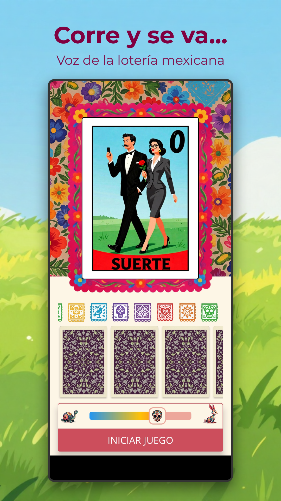
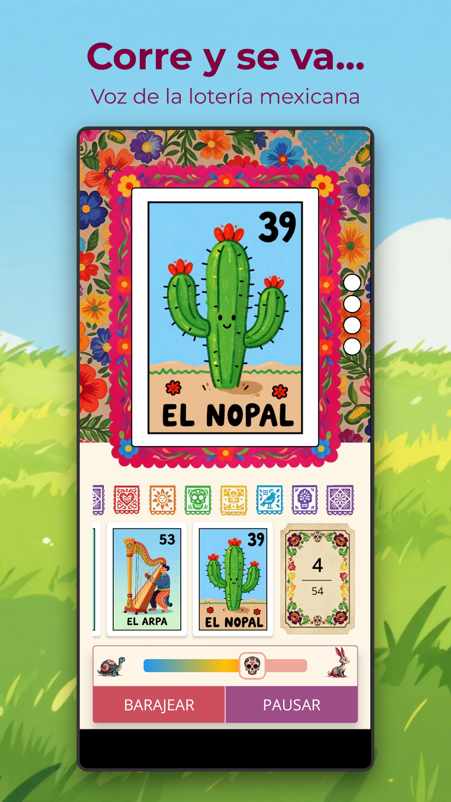
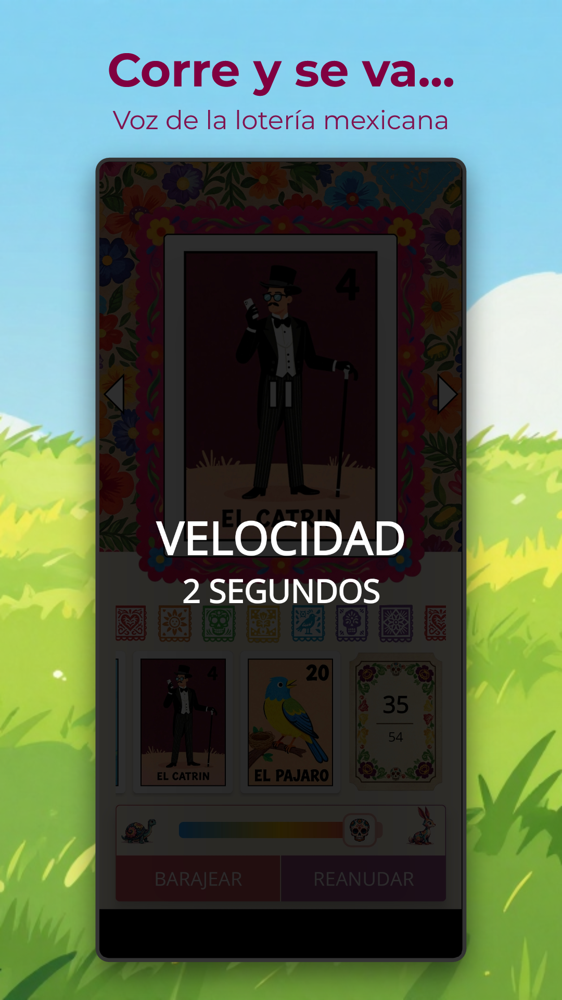
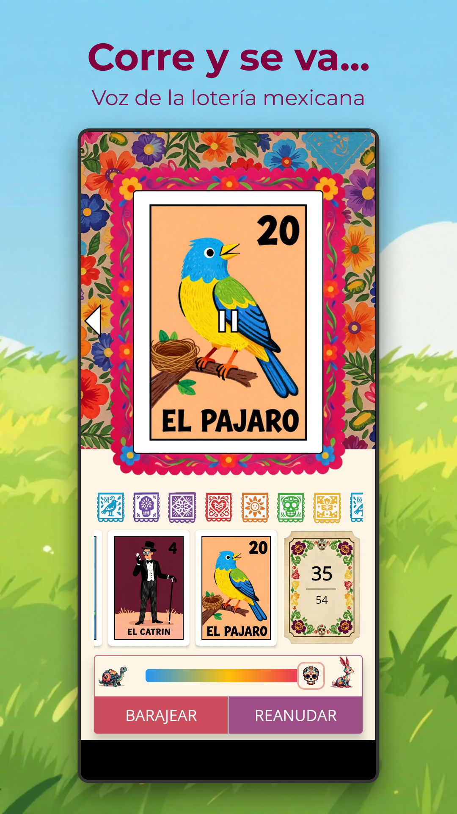

About Corre y se va
Corre y se va brings the beloved Mexican lotería to your Android device. No more searching for a physical deck or finding someone to be the caller, this app handles everything. With automated card dealing, authentic voice calls, and beautifully designed card artwork, it's the perfect companion for family game nights, parties, or any gathering where la lotería is a must.
La lotería mexicana is a traditional card game similar to bingo, played with a deck of 54 colorful cards featuring iconic characters and symbols like El Sol, La Luna, El Diablito, and La Sirena. A caller, known as the cantador, draws cards and announces them, while players mark matching images on their boards (tablas). The first to complete a pattern shouts "¡Lotería!" to win.
Whether you're keeping tradition alive with your family or introducing friends to this beloved game, Corre y se va makes it easy to play anywhere, anytime, no physical deck, no dedicated caller needed.
Automated Caller
Cards are drawn and announced automatically with authentic voice calls, just like having your own cantador.
Original Artwork
Fresh, beautifully designed lotería card illustrations that honor the tradition with a modern touch.
Adjustable Speed
Control how fast cards are called to match your group's pace, slow for beginners, fast for seasoned players.
Digital Deck & Caller
Your digital deck and caller in one app, no physical cards to lose or shuffle.
Family Friendly
Perfect for all ages, from kids learning the cards to abuelitos who've played for decades.
Works Offline
Play anywhere, no internet connection required. Everything runs locally on your device.
Screenshots




Frequently Asked Questions
- What is Mexican lotería?
- Lotería is a traditional Mexican card game similar to bingo. It uses a deck of 54 colorful cards featuring iconic characters and symbols. A caller (cantador) draws cards and announces them while players mark matching images on their game boards (tablas). The first player to complete a pattern shouts "¡Lotería!" to win.
- Can I play without a physical deck?
- Yes! Corre y se va replaces the physical card deck and the caller. Just gather your players with their physical tablas and let the app handle the rest.
- Does Corre y se va work offline?
- Yes, everything runs locally on your device. No internet connection is required to play.
- Is the app available in English?
- The app is currently available in Spanish, featuring an authentic voice caller to provide the traditional lotería experience.
- How many players can play?
- The app serves as the caller, so as many people as you have game boards for can play together. It's perfect for family gatherings, parties, and game nights with any group size.